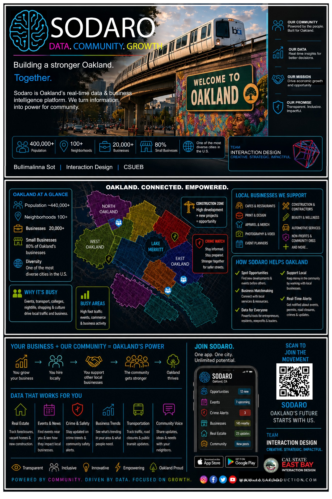

Solo Graduate Thesis · Interaction Design · UX/UI
See what is happening.
Understand why.
Know what to do next.
Sodaro is an AI-powered concept for Oakland small businesses. It turns city conditions, community activity, construction, crime alerts, permits, and local opportunities into simple actions.
DataCommunityGrowthOpportunity

Move your cursor or tap the scene
Interactive SaaS teaser
Business status demo
Choose a business type, then switch the current condition.
Good afternoon, BulliCafe · Downtown Oakland
Live
Business isNORMAL
Keep your regular hours and promote today's best seller.
Maintain stable sales and prepare for the evening rush.
Visitors84
Sales$612
New customers9
Foot trafficNormal
New feature concept
Photo Inspection Check
Upload or take a storefront photo to preview how Sodaro could explain visible code concerns before an official inspection.
01
Upload a photo
The demo will simulate a visual review and connect findings to example city-code guidance.
Analyzing visible conditions
Checking access, signage, sidewalk clearance, and outdoor setup...
87
Inspection readinessReview recommended
City-code update
Outdoor display and sign requirements were recently updated. Review details before your inspection.
Thesis prototype only. Results are simulated guidance and not an official inspection decision.
City awareness
Crime, construction, and community alerts
Click a card to see how one local condition changes the business recommendation.
Selected insight
Choose an alert above.
Sodaro connects local conditions to plain-language recommendations.
Interaction design thesis
From confusion to action.
The core journey is simple: see the current status, understand the cause, receive a clear suggestion, and take action. Sodaro is designed for owners who do not have time to study complicated dashboards.
- 1See Slow, Normal, or Busy
- 2Understand the real-world cause
- 3Receive a practical recommendation
- 4Take action with confidence